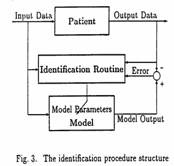

Interactive Personalized Metabolic Management
The image below shows the patient interface screen for personalizing a diabetes patient's individual food, insulin, and physical activity regimen.
The three very basic concepts that guide all our work are:
1) Control is more relevant than measurement. We think devices of the future, which will mimic life itself, will aim for the overall success of metabolic control, attained by keeping the parameters of interest within the target range. Knowing any parameter value with a certain accuracy and precision is less relevant;
2) Pro-active control mimics life. Indeed, there is no action of a living thing which is not controlled by a myriad of minute processes, each having an outcome preordained by the miraculous template of the DNA. (In dynamic control systems theory these systems are called "feedforward" - as opposed to the measure-and-correct, or "feedback" systems that we accept instinctively); and
3) Living things reflect the dynamics of their inputs. As research in system control theory has shown, a certain class of stable feedforward systems have structures that are actually governed by the dynamics of their input functions.
Here is the basic paper, discussing how the clinical data was processed:
PATIENT SPECIFIC EXPERT SYSTEM FOR IDDM CONTROL
A. Porumbescu†, R. Dobrescu‡, B. Jora‡, C. Popeea‡
†Array Vision Engineering, Gainesville, USA.
E‑mail: porumbescu@usa.net
‡Politehnica University of Bucharest, Romania.
Department of Automatic Control and Computers,
E‑mail: jora@ulise.cs.pub.ro
Abstract: The paper proposes a procedure to optimize a mathematical model of exogenous glucose and insulin dynamics for diabetes patients in order to obtain a patient-specific software that allows improved metabolic control for every patient. To that end, the paper deals with a simplified structure of an Insulin Dependent Diabetes Mellitus (IDDM) system model proposed by Salzsieder [6], completed with a novel method to describe the conversion of ingested food into blood glucose (BG) and the effects of the exogenous insulin injections. The paper also presents a procedure for model parameter estimation using recursive Kalman filtering techniques. The simulation environment used for the validation of the proposed procedures was MATLAB.
Keywords: Blood glucose metabolism; mathematical model; parameter identification; numerical simulation.
1. INTRODUCTION
The ultimate purpose of our research is to develop a novel device and software which will allow IDDM patients to evaluate and predict the degree of metabolic control they achieve and to perform minor corrections to their diet and exercise regimens before an out of control condition occurs. The project's significance and actuality stem from the fact that diabetes mellitus is a significant chronic disease with no cure, which affects about 100 to 150 million people worldwide. The incidence of IDDM, commonly known as Juvenile Diabetes because it appears mostly among children and teenagers, has increased several-fold during the last thirty years, and more than 30,000 new cases are identified each year in USA alone. IDDM is a syndrome of disordered metabolism, leading to hyperglycemia due to an absolute deficiency of insulin secretion. The only known way to prevent the patient's death is by administering insulin.
Technological advances have made it possible for the patient to administer insulin at home and to monitor the blood glucose levels, but at a significant cost: the test equipment costs less than $100, but the test strips and accessories run about $2,000 per year per patient. Diabetes patients spend more than $2,000 per year at the pharmacy, which is three to eight times more than the non-diabetic pharmacy customers. Poor control of the disease results in shorter life spans and very serious complications, such as hypoglycemic coma. After having diabetes for more than 15 years, an increasing percentage of patients develop long‑term complications such as atherosclerosis, retinopathy, neuropathy and nephropathy. More than 90% of the patients are affected by one or more complications after 25 years. Hundreds of thousands of dollars in hospital charges are accumulated by many diabetes patients such afflicted. As a result, the comprehensive cost of diabetes for every nation is very expensive and difficult to support. It has now been established that better metabolic control leads to dramatically fewer complications, but currently available equipment does not take into account the blood glucose dynamics. Consequently, the patients carry burden of understanding the temporal characteristics of the physiological mechanisms of blood glucose regulation. If equipped with the knowledge and willingness to devote the time, they can achieve a good overall level of control, but the vast majority do not understand such issues and can only stay healthy by adhering to a very stringent schedule of insulin, food and exercise that does not vary from one day to another.
Hence, our approach fits very well, because it formalizes pro‑active self‑control, while offering the added benefit of helping the patient decide on the time and frequency of the blood glucose tests. This eliminates unnecessary testing and achieves significant reductions in the cost of additional in‑home testing that would be needed to achieve tight control. The novelty of this work consists in the fact that we propose a way to compute and generate the data necessary to predict the dynamics of the individual patient's body in order to maintain blood glucose within normal limits. It will give all diabetes patients the means to improve their metabolic control and the confidence and motivation to improve their compliance levels.
2. THE DYNAMICAL MODELING OF GLUCOSE AND INSULIN METABOLISM
A proper mathematical model must reproduce as accurately as possible the steady‑state glucose balance and retain, for control purposes, the essential dynamical aspects. The variables having a non-negligible significance in blood glucose (BG) metabolism are given in Fig. 1 as input‑output variables. Though muscular activity (effort) and nervous activity (stress) are quite decisive in a particularization of the patient behavior, they were not yet taken in account at this stage of our research.
Having in mind the complexity of human biological system, an appropriate model is likely to be multivariable, multidimensional and nonlinear. Nevertheless, in some specified circumstances, a simplified linear model can be successfully used.
Maintaining BG within normal limits can be treated as a control system engineering problem and was and continues to be object of much research, see Salzsieder et al. (1985)[6], Berger and Rodbard (1989)[1], Rutscher et al. (1994)[5], Pacini (1994)[4].
Fig. 1. I/O variables of the blood glucose metabolism model
The model we started our research with was proposed by Salzsieder (1985). The block diagram of Salzsieder's kinetic model for the glucoregulatory system is depicted in Fig 2.
Fig. 2 The structure of Salzsieder's model for blood glucose control
Notations: NEGB - net endogenous glucose balance; ID - insulin dose; IRI - plasma insulin concentration; GU1 - insulin controlled peripheral glucose disappearance; Gexg - exogenous glucose.
Here are the four equations describing the linear part of this model:
(1)
This model was simplified for use in the case of IDDM patients. In such situations the internal capability of blood glucose control does not exist, therefore the endogenous insulin production is zero. This corresponds to zero controller parameters in the equations above, i.e. a1 = 0 and a2 = 0
2.1 The food model
The conversion of food to blood glucose has been the subject of extensive studies in the last 25 years, however, not with respect to time course modeling: little insight on blood glucose dynamics is provided by an otherwise very impressive amount of data.
The only available numerical indicator of the time course for this conversion process is the glycemic index (GI). It is defined as the ratio between the areas under the particular food's blood glucose curve, computed for a time interval equal to three hours from the moment of food ingestion, and the corresponding blood glucose response for a "standard" food, such as white bread or glucose. Importantly for our approach, experimentally obtained GI data that documents the dependence of GI on the fiber content provided the initial conceptual support for the methodology we developed for modeling Gexg(t), the exogenous glucose time functions.
Extensive GI experimental information exists in the literature about many foods, but it only provides a minimal amount of information for modeling the blood glucose time course because:
a) It reflects all processes of glucose uptake in the body ‑ insulin and non‑insulin mediated ‑ not the glucose conversion alone. Therefore the glycemic indices of multiple foods cannot be superimposed to account for complete meals;
b) The glycemic index gives no blood glucose information before or after three hours from the time of ingestion;
c) The glycemic index data exhibits a great degree of variability, as hard to control parameters such as the method of cooking and food combinations can significantly affect the measurement.
However, this is solid experimental data, albeit the only data available to describe temporally the transformations taking place when food is converted to blood glucose. The work we report here is based therefore on published glycemic index data, whenever such data was available for a certain type of food.
The challenge was to devise a reasonably rigorous set of rules that would allow us to generate specific time functions for every type of food. For time course modeling purposes, we postulated that the blood glucose activity corresponding to a food bolus is the sum of the activities of several elementary constituents. Each of them would have specific physico‑chemical properties, determined by their enzyme‑mediated breakdown and the eventual conversion to glucose.
We accounted for carbohydrates, protein and fat components to estimate the time course of blood glucose from food, and we combined the Total Available Glucose (TAG) method with published glycemic index data from Foster‑Powel and Brent Miller (1995)[2].
Nutritional information available from the USDA database, commercial software products and package labels offer the content of carbohydrate (CHO), sugar (SUG), fat (FAT) and protein (PRO). The CHO, as is currently reported, consists of compounds that ultimately break down into glucose - starchy glucose foods we denote as STAG. Similarly, "starchy" galactose is denoted as STAL and "starchy" fructose STAF, therefore for any food of known glycemic index, the total carbohydrate content can be decomposed vectorially into its elementary components:
CHO= STAG + STAF + STAL+ + SUGG + SUGF + SUGL (2)
because
SUG = SUGG + SUGF + SUGL (3)
That is, the sugar content of the food as reported on the package is also a combination of different simple sugars. Using italics to indicate that all these components are time‑varying functions involved in the transformation process, we write:
TAG = 0.58PRO+ 0.11FAT+ STAG+STAF+ +STAL+SUGG+SUGF+SUGL (4)
Where
òPRO(t)dt = PRO ò EPRO(t)dt,
òFAT(t)dt = FAT ò EFAT(t)dt, (5)
òSTAG(t)dt = STAG ò ESTA(t)dt,
In the above equation Ei(t) are characteristic functions describing the temporal behavior of each elementary food component. They were selected as being the output from a chain of N compartments connected with one‑way fluxes of the same rate a:
aN
E(t) = . tN-1 . e -a..t (6)
(N ‑ 1)!
Because these functions describe food conversion to blood glucose, it is likely that each elementary food component is described by a unique pair of coefficients, a and N, where N is a function of the specific way each elementary food component converts to blood glucose (the number of compartments required for complete conversion), while a could be thought of as an average of the fluxes in all compartments. For example, N = 1 would describe monosaccharides, while for fats N might be larger than 5.
In this stage of research we elected to use N as equal to 4 compartments, for all elementary food components, mainly to reduce computational complexity and to match the similar functions we employed to describe the different insulin preparations.
2.2 The insulin model
The endogenous insulin production model is much more complex because of various cellular phenomena. For example, the endogenous insulin is used in two phases: a rapid, already synthesized one in the first phase and a time released, not synthesized in the second phase. Also, 50% of the insulin is lost rapidly in the liver (in non‑diabetic cases the liver contains twice more insulin than the rest of the system).
On the other hand, the effects of exogenous insulin can be easier modeled. The transformation of an insulin injection to an input variable for the equations (1) above, can be described by a similar model as for the food conversion into blood glucose as described by equations (3) through (6). In this case, the rate a is determined by the type of insulin injected (rapid, lente, ultralente, etc.).
3. PARAMETER ESTIMATION
The main goal of our simulation experiments was to validate the model based on the available clinical input‑output data. Another goal was the elaboration of an in‑line parameter identification algorithm for computing the patient‑specific dynamical characteristics. If the methodology proved promising, in the sense that data simulated by the validated model is sufficiently close to the experimental clinical data, the opportunity of adaptively controlling blood glucose exists, and is achievable by simply modifying the food intake and insulin schedules.
The identification procedure follows the classical ideas of least squares by minimization of a plant‑model output error criterion (see Fig. 3). More precisely, we used a discrete Kalman filter for parameter estimation.
For all sampling points k, where k = 0 ……. N, we define as:
u1(k) = Gexg(kT), and u2(k) = Iexg (kT)
as the two inputs, and
y(k) = BG(kT) as the system output.
The available input‑output experimental data applies to k values from 0 to N, and predicted data corresponds to k = N+1, N+2, etc.
Here k is the (discrete) time step and T is the sampling period (in our case T was 15 minutes). The discrete space‑state model derived from Salzsieder's may be easily converted to an input‑output model described by the following difference equation:
y(k) = åaI .y (k-i) + åb1i .u1 (k-i) + + åb2i .u2 (k-i)+ e(k) (7)
or
y(k) = qT. w (k) + e(k) (8)
where the summations are from i = 1 to i = n, with n the estimated model order, assumed constant and known.
The matrix q is the unknown parameter vector and is defined as:
q = [a1 a2 … an b11 b12 … b1n b21 b22 … b2n]
The vector of the observations is defined as
w(k) = [y(k-1) y(k-2) … y(k-n) u1 (k-i) u1(k-1) u1 (k-2) … u1 (k-n) u2 (k-1) u2 (k-2) .. u2 (k-n)] and
e(k) is a Gaussian zero-mean white measurement noise.
Under the assumption that q is constant across the entire experiment horizon, the equation (8) above is interpreted as the output equation of the parameter state space model:
q(k+1) = q(k)
y(k)=wT(k).q(k) + e(k) (9)
Hence the Kalman filter for state estimation of the above parameter system is given by the relationships (see e.g. Jora et al. (1996)[3]:
P(k).w(k)
K(k) =
r2+ wT(k).P(k).q(k)
P(k).w(k). wT(k).P(k)
P(k+1) = P(K) - (10)
r2 + wT(k).P(k). q(k)
q (k+1) = q (k)+ K(k).y(k) - wT(k). q (k)
Given P(0) = P0 = P0T >0, and q(0) = q0 , equations (10) can be used to compute q(k). Under specific convergence conditions (such as a sufficiently persistent exciting input), the asymptotic value of q can be interpreted as the set of true model parameters.
Generally, the above form of the discrete Kalman filter is not the most reliable way to compute the unknown parameters in a recursive manner. It can be shown that a much more convenient procedure consists in solving, at each iteration, a classical least squares problem, such as the over-determined linear system:
A(k) . q(k + 1) = b(k),(11)
where the matrices A(k) and b(k) are adequately updated at each step by using the corresponding observation vector w(k). It is important to stress that, from a numerical point of view, the sequential computation of q(k) uses essentially the previous results, so that the computational complexity is reduced to O(n2) floating point operations per iteration.
4. SIMULATIONS
Two days of real blood glucose measurements, obtained by frequent sampling in a controlled clinical setting were available for our simulation experiments. Also known were the contents of the patient's four daily meals and the dosages and times of the insulin injections.
The BG was measured with a sampling period of 15 minutes.
Using the food and insulin models presented in Chapters 2.1 and 2.2 above, the values over time of the two metabolic model inputs, the exogenous insulin Iexg(t) and the exogenous glucose Gexg(t) were independently computed for the days for which experimental data existed.
As we have already mentioned, for the Iexg(t) and Gexg(t) computations we used, in the formula (7) the same value N = 4 in all situations, but different values for the parameter a depending on the food components and insulin type. The computed Iexg(t) and Gexg(t) are shown in Fig. 4 and were used as the known input data in all simulation experiments.
Because the main feature of the desired model is its prediction capability of the future evolution of a patient blood glucose, the simulations were organized as follows:
ü we used a specific portion of the available input‑output data to perform the sequential parameter estimations ("parameter estimation horizon"), as marked by a vertical line in the BG real / simulated evolutions shown in Figures 5 and 6;
ü using the recursive techniques for parameter estimation presented in section 3, the optimal model parameters were computed based on the input‑output data within the parameter estimation horizon; although the literature recommends higher values for the glucose metabolism model order (e.g. four in Salzsieder's model, presented in Section 2) we have considered different model order values, beginning with a first‑order model;
ü using the optimally estimated parameters, we computed the simulated patient BG on the entire two‑days "simulation horizon" for which additional input Iexg(t) and Gexg(t) data were available; this simulated BG evolution was then compared with the real BG evolution by computing the least squares residues and by depicting them on the same drawing for comparative visual analysis: on the left hand side of the vertical line to illustrate the reproduction accuracy and on the right hand side to illustrate the prediction capabilities of the model.
All computations were performed in the MATLAB environment using kernel built‑in functions and Control Toolbox M‑files.
As a low model order example we studied a second‑order discrete linear model whose parameters were sequentially estimated by using 150 iterations.
The parameter evolution during the estimation process and the simulated BG evolution based on parameter values computed at the 80th and 150th iterations (estimation horizons of 20 and 37.5 hours, respectively) are shown in Fig. 5.
The simulation results show that after ~ 50 iterations (or ~ 13 hours) the estimated parameters have an evident tendency to attain some steady‑state values.
This is useful information as to the amount of input‑output data necessary for adequate parameter estimation. The simulated BG evolution approximates very well the past real BG values and the future values over approximately 5 hours.
Moreover, when compared with the real BG evolution, the approximation appears to be acceptable over the entire future simulation horizon (max. 38 hours in the case of our available data).
Fig. 4. The model inputs: exogenous insulin Iexg(t) and exogenous glucose Gexg(t)
As a higher order example we considered a fourth order linear model (like the Salzsieder model). The conclusions are similar to those referred to for the lower order model.
The approximation of the real BG evolution is better, but not significant enough to justify the additional model complexity. Experiments with models of order higher than four did not provide any improvement in the prediction accuracy and, in our opinion, are not recommended for use in this type of metabolic modeling application.
Finally, we remark that we also used for parameter estimations the 4SID identification techniques (see for example Viberg (1995) [7]), but found that the models obtained in this manner have significantly diminished prediction capabilities.
Fig. 5. The real / simulated BG evolution for the second order model.
Fig. 6. The real / simulated BG evolution: 4th order model.
5. CONCLUSIONS
Three important methodologies were developed as a result of this research:
ü A new, semi-empirical model that describes in mathematical terms interactions between glucose and insulin which could not be accounted for by previous models;
ü A new method to describe the blood glucose time course after food is ingested; this method combines carbohydrate counting with Total Available Glucose and published glycemic index data, and predicts more accurately the dynamics of the exogenous blood glucose for any type of food;
ü A numerically reliable method to compute the parameters of a patient-specific metabolic model, which uses recursive Kalman filtering techniques and is based on a limited number of actual blood glucose measurements.
REFERENCES
[1] Berger M, Rodbard D (1989): Computer Simulation of Plasma Insulin and Glucose Dynamics After Subcutaneous Insulin Injection. Diabetes Care 12(10), 725-736.
[2] Foster-Powell R, Brent Miller J (1995): International Tables of Glycemic Index. Am.J. Clin.Nutr., 871S-888S.
[3] Jora B, Popeea C, Barbulea S (1995): Nu- merical Methods in Automatic Control Systems. Editura Enciclopedica (in Romanian).
[4] Pacini G (1994): Mathematical Models of Insulin Secretion in Physiological and Clinical Investigations. Computer Methods and Programs in Biomedicine 41, 269-285.
[5] Rutscher A, Salszieder E, Fischer U, Freyse E-J (1994): KADIS: Model-Aided Education in Type I Diabetes. Computer Methods and Programs in Biomedicine 41, 205-215.
[6] Salszieder E, Albrecht G, Fischer U, Freyse E-J (1995): Kinetic Modeling of the Glucoregulatory System to Improve Insulin Therapy. IEEE Transactions on Biomedical Engineering. BME-32, 846-855.
[7] Viberg M (1995): Subspace-Based Methods for the Identification of Linear Time-Invariant Systems. Automatica. 31(12), 1835-1851.
© 2016 LivProactiv, Inc.